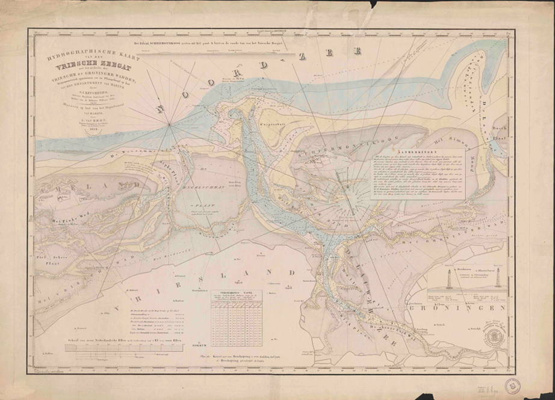
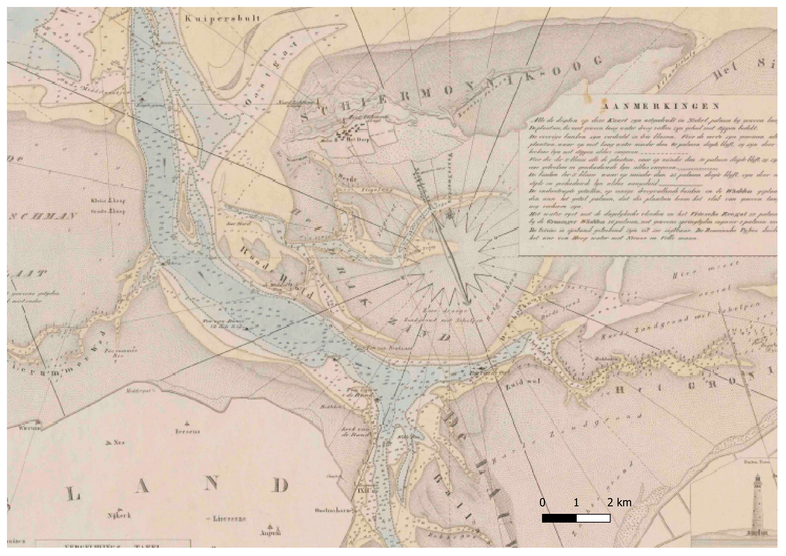
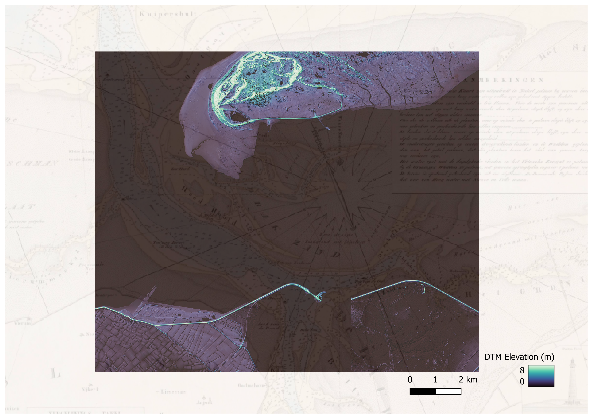
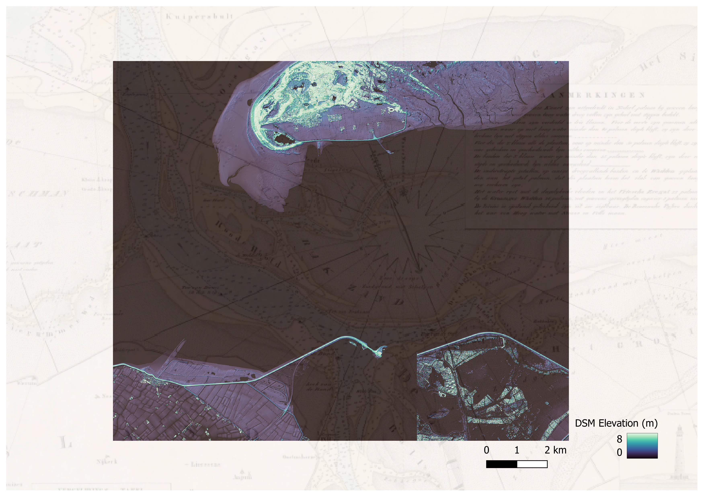

DTM and DSM Map
For this assignment, I selected the map from the digitized special collections of the University of Utrecht that has the title “Hydrographische kaart van het Vriesche Zeegat : met een gedeelte der Vriesche en Groningsche Wadden (Hydrographic chart of the Frisian Sea Gap: with a part of the Frisian and Groningen Wadden)”. The map was created under the order of the marine army in 1832 by S.J. Keuchenius and later edited by A. Van Rhijn in 1854. The size of the physical map is 64 x 90 cm.

Since the map is huge, I decided to focus on a smaller section in the Northern Hollands, from today’s Zoutkamp to the islands of Schiermonnikoog and Hollum. This area caught my interest because, according to a map from the 19th century, the islands were connected to the mainland. The study area is 300 square km, resulting as 3,000,000KB of earch merged DTM and DSM data. DTM (Digital Terrain Model) shows the topography of the land, without any natural or artificial objects. DSM (Digital Surface Model) captures the elevation of everything visible from above. As the first step for this project, I downloaded pictures from a service called geotiles. Geographical Picture Data are often saved in tiles, because it is easier to save, identify, merge and substitute in that way. Each tile is 31 square km, and I could merge the downloaded tiles on QGIS to a picture. With some modification, styling, and adjustments, the map ended up looking like this.


I chose this color scheme to emphasize that the darkest blue means 0 m elevation and the ocean surface. It is interesting to see how the river’s outfall has widened and how the island has become isolated from the mainland over the years.

Again, the darkest blue is 0 m elevation and the ocean surface. From this data, we can see that trees and buildings are located behind the Embankment. This could be due to the coastlines being prone to change.
DTM and DSM might not look too different at first glance. However, the narrative we can make from that data is different. The DTM - old Map image shows how the landscape changed with the river and the ocean over time. The DSM - old Map image shows that buildings and trees are standing close but not directly next to the coastline. We can see life adapting to geological change.